8. Paul Pogba
Joueurs professionnel de football né le 19 décembre 1987 (34 ans) actuellement il joue au Réal de Madrid.
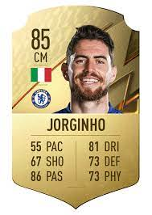
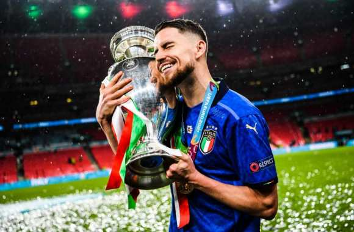
7. Gianluigi Donnarumma
Joueurs professionnel de football né le 5 février 1985 ( 37 ans) actuellement il joue a Manchester United.
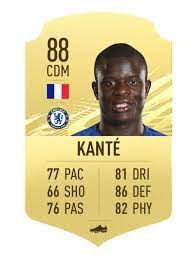
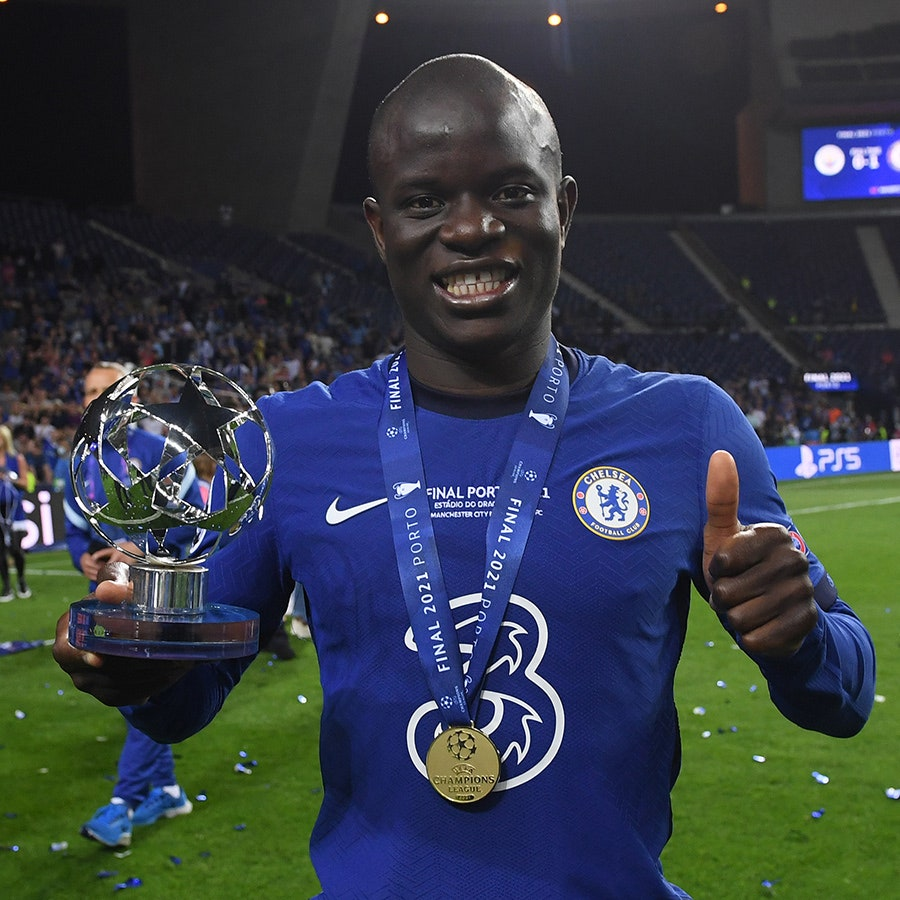
6. Lionel Messi
Joueurs professionnel de football né le 24 juin 1987 (35 ans) actuellement il joue au paris saint-germain.
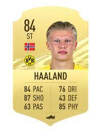
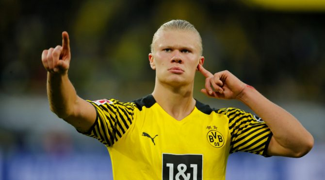
5. Robert Lewandowski
Joueurs professionnel de football né le 21 août 1988 (33 ans) actuellement il joue au Bayern de munich.
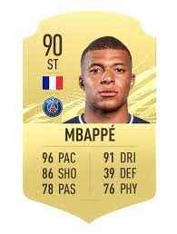
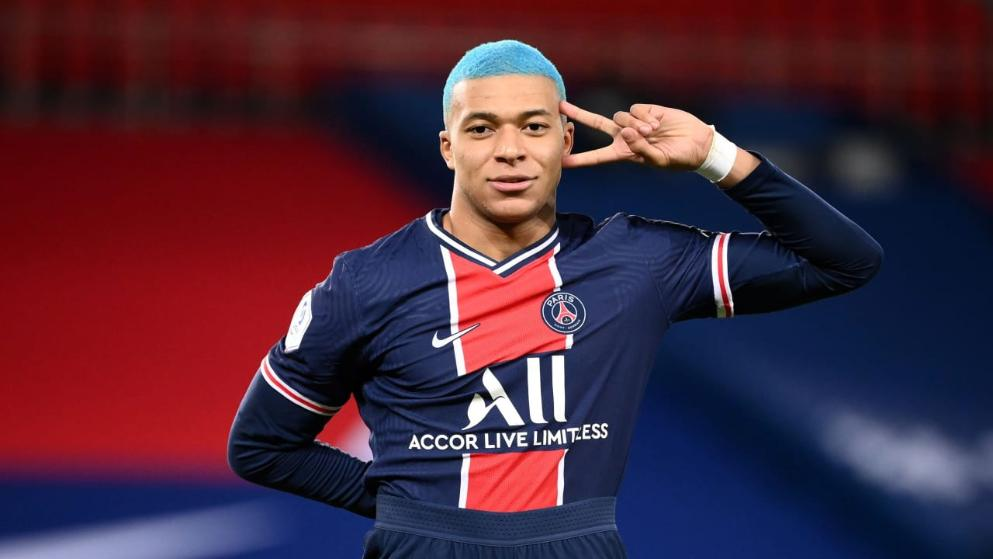
4. Erling Haaland
Joueurs professionnel de football né le 21 juillet 2000 (21 ans) actuellement il joue au Borussia Dotmund.
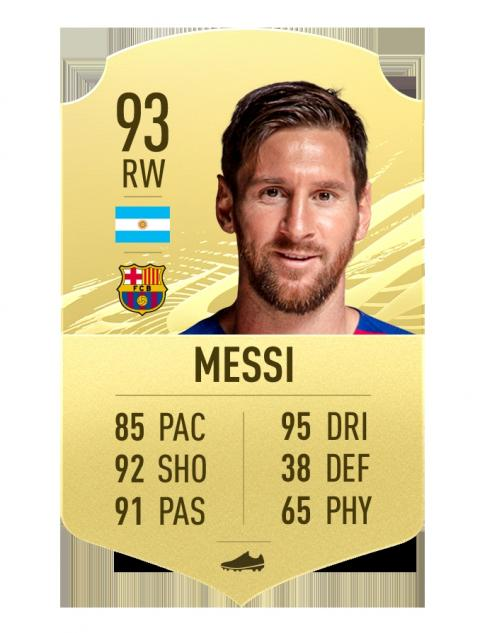
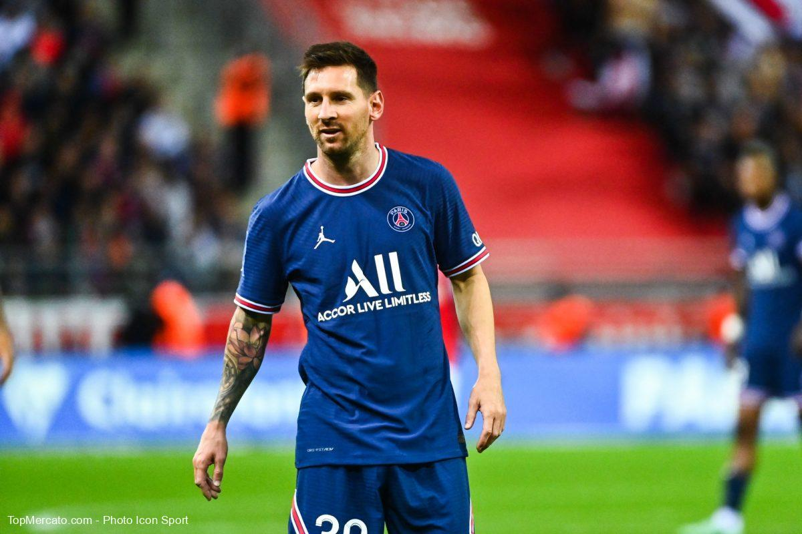
3. Achraf Hakimi
Joueurs professionnel de football né le 4 novembre 1998 (23 ans) actuellement il joue au paris saint-germain.
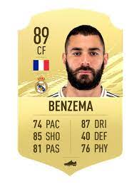
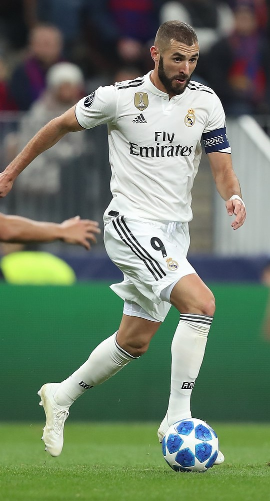
2. Hakim Ziyech
Joueurs professionnel de football né le 19 mars 1993 (28 ans) actuellement il joue a Chelsea.
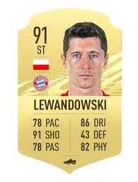
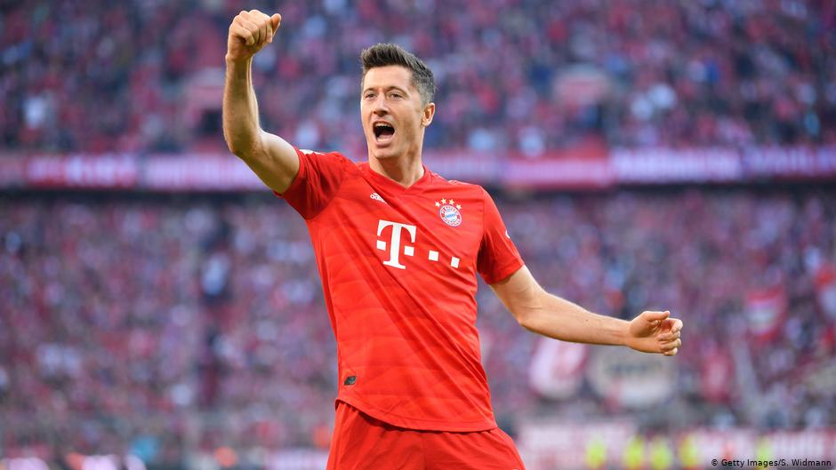
1. Bruno Fernandes
Joueurs professionnel de football né le 8 septembre 1994 (27ans) actuellement il joue a Manchester United.
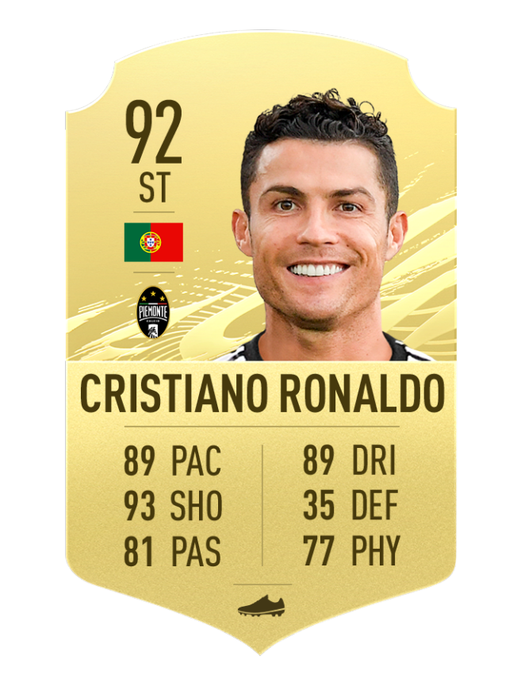
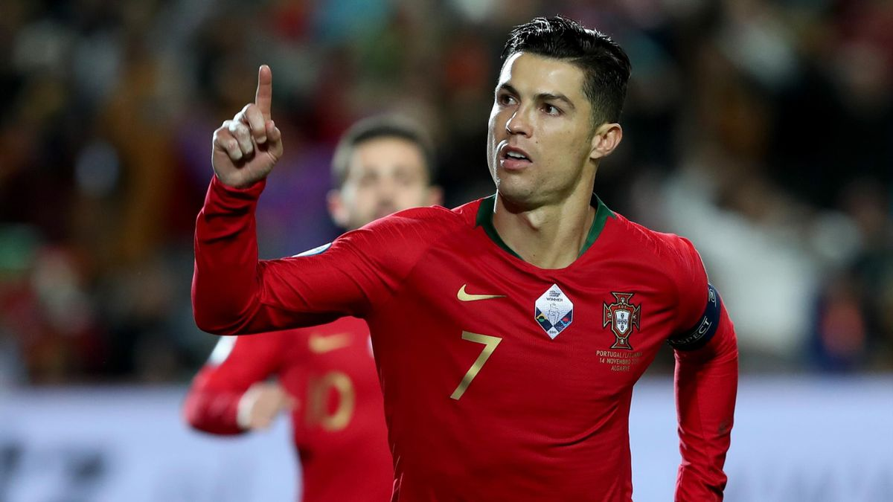